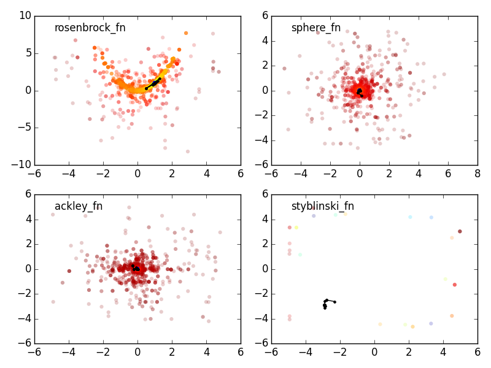

Differential evolution (DE)¶
This implements only a single class: DiffEvolOptimizer that follows the differential evolution optimization method by Storn & Price (Storn, R., Price, K., Journal of Global Optimization 11: 341–359, 1997, DE original paper)
Main assuption: the heuristic suppose a continuous parameter space.
About Differential Evolution¶
DE is a method that searches optima of a function iteratively trying to improve a candidate solution with regard to a given measure of quality. Such methods are commonly known as metaheuristics as they make few or no assumptions about the problem being optimized and can search very large spaces of candidate solutions. However, metaheuristics such as DE do not guarantee an optimal solution is ever found.
DE is used for multidimensional functions but does not use the gradient itself, which means DE does not require the optimization function to be differentiable, in contrast with classic optimization methods such as gradient descent and newton methods.
DE can therefore also be used on optimization problems that are not even continuous, are noisy, change over time, etc.
DE works like a swam optimization problem. It maintains a population of candidate solutions and creating new candidate solutions by combining existing ones (with a simple prescription), and then keeping whichever candidate solution has the best score or fitness. The optimizer treats therefore the problem as a black box and thus does not require knowledge of the gradient.
Practical Advice¶
This is taken from Storn’s website (Differential Evolution homepage)
If you are going to optimize your own objective function with DE, you may try the following classical settings.
- The size of the population of about 10 times the number of parameters
- the weighting factor F=0.8 (in general F=0.5-0.8 works best)
- the cross-over probability C=0.5. Use 0.9 to test fast convergence and smaller values for elaborate search.
- It has been found recently that selecting F from the interval [0.5, 1.0] randomly for each generation or for each difference vector, a technique called dither, improves convergence behaviour significantly, especially for noisy objective functions.
- It has also been found that setting C to a low value, e.g. C=0.2 helps optimizing separable functions since it fosters the search along the coordinate axes. On the contrary this choice is not effective if parameter dependence is encountered, something which is frequently occuring in real-world optimization problems rather than artificial test functions. So for parameter dependence the choice of C=0.9 is more appropriate.
- Another empirical finding is that rasing npop above, say, 40 does not substantially improve the convergence, independent of the number of parameters. It is worthwhile to experiment with these suggestions. Make sure that you initialize your parameter vectors by exploiting their full numerical range, i.e. if a parameter is allowed to exhibit values in the range [-100, 100] it’s a good idea to pick the initial values from this range instead of unnecessarily restricting diversity.
Note
Keep in mind that different problems often require different settings for N, F and C
A good objective function can make all the difference.
Relevants links/images¶
Example¶
def rosenbrock_fn(x):
""" Rosenbrock function
global minimum at x = [1, ..., 1], f(x) = 0
"""
_x = np.array(x)
return sum(100.0 * (_x[1:] - _x[:-1] ** 2) ** 2. + (1 - _x[:-1]) ** 2.)
# setup the optimization
ngen, npop, ndim = 100, 100, 2
limits = [[-5, 5]] * ndim
de = DiffEvolOptimizer(rosenbrock_fn, limits, npop)
# store all the values during iterations for plotting.
pop = np.zeros([ngen, npop, ndim])
loc = np.zeros([ngen, ndim])
for i, res in Pbar(ngen).iterover(enumerate(de(ngen))):
pop[i,:,:] = de.population.copy()
loc[i,:] = de.location.copy()
# plot all explored points
ax.scatter(pop[:, :, 0].ravel(), pop[:, :, 1].ravel(),
c=np.log10(vals + 1e-20), alpha=0.2, edgecolor='None')
# plot the final positions
plt.plot(loc[:, 0], loc[:, 1], 'k.-')
plt.show()
Testing multiple common functions (code included in test.py)
API¶
Differential evolution (DE)¶
This implements only a single class: DiffEvolOptimizer that follows the differential evolution optimization method by Storn & Price (Storn, R., Price, K., Journal of Global Optimization 11: 341–359, 1997)
Main assuption: the heuristic suppose a continuous parameter space.
- class de.DiffEvolOptimizer(fun, bounds, npop, F=0.5, C=0.5, seed=None, maximize=False)[source]¶
Implements the differential evolution optimization method by Storn & Price (Storn, R., Price, K., Journal of Global Optimization 11: 341–359, 1997)
Attributes
fun: callable the function to be minimized bounds: sequence of tuples parameter bounds as [ndim, 2] sequence npop: int the size of the population 5 * ndim - 10 * ndim are usual values F: float, optional (default=0.5) the difference amplification factor. Values of 0.5-0.8 are good in most cases. C: float, optional (default=0.5) The cross-over probability. Use 0.9 to test for fast convergence, and smaller values (~0.1) for a more elaborate search. seed: int, optional (default=0) Random seed, for reproductible results maximize: bool, optional (default=False) Switch setting whether to maximize or minimize the function. Defaults to minimization. population: ndarray The population parameter vector Methods
__call__([ngen]) iteroptimize([ngen]) Iterator to the optimizer for ngen generations optimize([ngen]) Run the optimizer for ngen generations step() Take a step in the optimization - iteroptimize(ngen=1)[source]¶
Iterator to the optimizer for ngen generations
Parameters: ngen: int
number of iterations
Returns: population: ndarray
population locations, [Npop x Ndim]
fitness: ndarray
population values, [Npop]